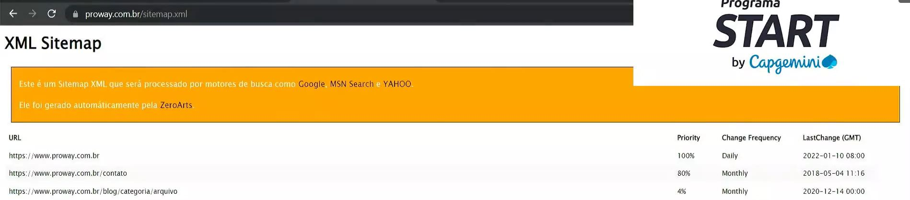

Onpage SEO
- - Não confunda com OnePage(uma página), são páginas que possuem ancoragem ao qual você vai acessando
em blocos.
- - Não tem relação com colocar palavra-chave no código(meta name="keywords"), isso não se usadamais.
Era usado para interpretar s relevancia do sites, mas isso fazia que os desenvovlvedores colocassem
palavras chaves irrelevantes para usuario.
- - Diferente de outbound (panfletagem, telemarketing), vai oferecer a explicação e conteúdo e depois oferece o produto
- - Quando falamos de SEO falamos a explicação do conteudo, informação e depois oferecer o serviço /produto
- - SEO On-Page são todas as otimizações feitas dentro da página. Ou seja, quando você cria um título utilizando
sua palavra-chave principal, acrescenta descrição nas imagens do texto, define uma URL apropriada, utiliza os
subtítulos adequadamente, insere links para outros conteúdos do seu site, TUDO ISSO é SEO On-Page
-
- Existe a onPage e a OffPage.
- - O Onpage é o que está no site
- - OffPage é o que está fora do site, o que os outros sites falam de você. Se falam do seu site em outros solicitaçõesde
boa relevancia, sua relevancia sobe, se falam de você em sites de baixa relevancia , sua pontuação cai
Onpage SEO
SEO (6 prinicpais itens)
- URL amigável
- Meta title
- Meta description
- SiteMap
- título da página
- Conteúdo do texto
Cheklist
Título
- - Título da página: não tem limite de caractere. É o h1.
- - Meta title/SEO title. Não é o título da página. Também é o título da aba.
Deve ter no máximo 50 caractres. Tag title dentro do head.
Meta description
- - Deve conter o resumo da pagina.
- - Usa-se call to action(verbo no imperativo)
- - De ter no máximo 160 caracteres
- - meta name = " descriptiom" content="XPTO"
URL amigável
- - Incluir palavras-chaves, sem caracteres especiais. Ex: www.meusite.com.br/bolsa-preta-corrente-dourada
- - separar por hifen
SiteMap
- - Arquivo XML com todas as páginas do site. Existem ferramentas que fazem esse processo automaticamente.
- - Facilita para que você não preicse esperar o Crawler do Google encontrar o seu site para ser analisado
você manda direto para o servidor. A partir disso o google já começa analisar para definir o posicionamento.

Imagens
- - Coloque o texto ALT e descrição da imagem
- - Sempre salve com nome otimizado, nunca com nome aleatório
- - Exemplo : img src"camisa-polo-azul.jpg" alt="camisa azul gola polo" o nome deve ser otimizado, e não aleatório
- - Os mecanismos de buscas geralmente estão se baseando nos atributos ALT e na otimização da url
- - Opcionalmente, você pode colocar um title na sua imagem para quando o usuario passar o mouse.
- - Muito importante incluir o atributo ALT , para facilitar quem possui algum problema visual. Tem solicitações
que lêem essas descrições
Campos únicos
- - São os dados relacionados ao SEO, como o meta title
- - Não deve ser copiado de outras empresas, pois pode perder relevância.
- - Não deve ser copiado de outras pastes do seu site.
Conteúdo
- - Ser Original
- - Ter qualidade
- - Ter relevancia para o tema Abordado, termos repetidos podem causar queda no ranqueamento.
Evitar taxa de rejeição.
Hiperlinks no Âmbito SEO
- - Use quando possivel, links para outras páginas suas que colabore com o texto.
- - Neste caso, são os links que vão para páginas, que muitas vezes explicam algum texto abordado;
Intertítulos h2
- - Facilita a leitura do texto
- - Organiza o conteúdo
Outros pontos Relevantes
- - Mobile-friendliness (Por Mobile Friendly entendemos uma página que utiliza um conjunto de medidas
que fazem com que um site ou uma aplicação seja facilmente acessada, navegada e lida em dispositivos
móveis. Em tradução livre, ela é “adaptada aos dispositivos móveis”), devemos nos atentar a botões
pequenos, tamanho de letras em diversos dispositivos. Ou seja devemos testar em celular, tablets.
deixar o site amigável a dispositivos móveis. Existem ferramentas para que possamos verificar se ele
está adequado as visualizações, dev tools do google/firefox.
- - Velocidade de Carregamento, pois afeta o onpage SEO e não tenha uma maior taxa de rejeição
- - Legibilidade (fácil leitura)
- - Inexistência de erros
- - Segurança, não usar protocolos de segurança, tecnologias adequadas;
- - Entre outros ...